Dokumente prüfen.
Automatisch.
Der Legal & Admin Analyst liest, analysiert und bewertet Dokumente nach definierten Kriterien — schnell, präzise und DSGVO-konform.

Manuelle Dokumentenprüfung ist zeitaufwändig und fehleranfällig. Der Legal Analyst übernimmt die Erstprüfung automatisch — präzise, konsistent und in Minuten statt Stunden.
Drei Kernvorteile
Automatische Prüfung
Jedes eingehende Dokument wird vollständig gelesen, strukturell analysiert und nach Ihren vorab definierten Kriterien bewertet — ohne manuellen Aufwand.
→ Prüfzeit sinkt von Stunden auf Minuten
Compliance-Sicherheit
Kritische Klauseln, Fristen und Abweichungen vom Standard werden zuverlässig erkannt und markiert — konsistent und lückenlos über alle Dokumente.
→ Risiken werden erkannt bevor sie entstehen
Klare Zusammenfassungen
Eine strukturierte Zusammenfassung mit Risiko-Score, markierten Problemstellen und konkreten Handlungsempfehlungen wird automatisch generiert.
→ Entscheidungsgrundlage in unter 2 Minuten
Ihr Tool nicht dabei? Wir integrieren uns in nahezu jeden Stack.
Wie es funktioniert
Der Agent in Aktion
Dokument eingeht
Ein PDF, Word-Dokument oder Vertrag wird hochgeladen oder direkt über eine angebundene Quelle übermittelt — der Agent startet sofort die Verarbeitung.
Agent liest
Das gesamte Dokument wird vollständig gelesen und strukturell analysiert — Klauseln, Definitionen, Fristen und relevante Abschnitte werden identifiziert.
Kriterien geprüft
Jede relevante Stelle wird mit Ihren vorab definierten Compliance-Regeln, Unternehmensrichtlinien und Referenzdokumenten abgeglichen.
Bericht erstellt
Eine strukturierte Zusammenfassung mit Risiko-Score, markierten Problemstellen und konkreten Handlungsempfehlungen wird automatisch generiert.
Ergebnisse
Was Sie gewinnen
weniger Prüfzeit
DSGVO-konform
pro Dokument
Funktionen
Was der Agent für Sie tut
Automatische Klausel-Extraktion
Identifiziert und extrahiert relevante Klauseln, Fristen und Definitionen vollständig aus dem Dokument — ohne manuelles Markieren.
Compliance-Regelabgleich
Gleicht jede Klausel mit Ihren vorab definierten Compliance-Regeln und Unternehmensrichtlinien ab — konsistent und lückenlos.
Risiko-Bewertung & Flagging
Markiert kritische Stellen, bewertet das Risiko auf einer Skala und priorisiert Punkte für die manuelle Nachprüfung durch Ihr Team.
Zusammenfassender Bericht
Generiert auf Knopfdruck einen strukturierten Bericht mit Risiko-Score, Zusammenfassung und priorisierten Handlungsempfehlungen.
Referenz-Dokumentenvergleich
Vergleicht das Dokument automatisch mit Referenzverträgen und hebt Abweichungen vom Standard klar hervor.
DSGVO-konforme Verarbeitung
Alle Daten werden vollständig DSGVO-konform verarbeitet — wahlweise Cloud-basiert oder als On-Premise-Lösung ohne externe Datenübertragung.
Bereit für automatische Dokumentenanalyse?
Lassen Sie uns besprechen, wie der Legal & Admin Analyst Ihre Dokumentenprüfung beschleunigt — ohne Abstriche bei Genauigkeit und Compliance.
Jetzt anfragen →15 Min · Kostenlos · Unverbindlich